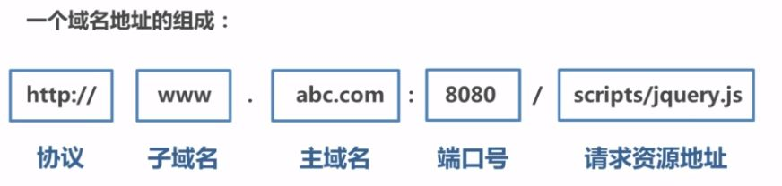
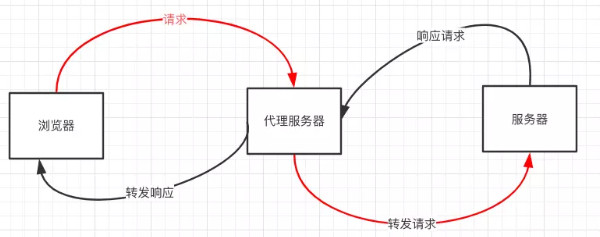

前言
前端在与后端进行数据交互时经常会碰到跨域请求，这里在此探讨一下。
什么是跨域
什么是同源策略及其限制内容
同源策略是一种约定，它是浏览器最核心也是最基本的安全功能，如果少了同源策略，浏览器很容易收到XSS，CSFR等攻击。所谓同源指的是协议+域名+端口三者相同，即便两个不同的域名指向同一个ip地址，也非同源。

同源策略的限制内容有：
- Cookie、LocalStorage、IndexedDB等存储性内容
- DOM节点
- AJAX请求发送后，结果被浏览器拦截了
但是有三个标签是允许跨域加载资源
<img src="..."><link href="..."><script src="...">
常见跨域场景
当协议、子域名、主域名、端口号中任意一个不相同时，都算作不同域。不同域之间相互请求资源，就算作跨域，常见的跨域场景如下图所示：
| URL | 说明 | 是否允许通信 |
|---|---|---|
| http://www.a.com/a.js http://www.a.com/b.js |
同一个域名下 | 允许 |
| http://www.a.com/lab/a.js http://www.a.com/script/b.js |
同一域名下不同文件夹 | 允许 |
| http://www.a.com:8000/a.js http://www.a.com/b.js |
同一域名，不同端口 | 不允许 |
| http://www.a.com/a.js https://www.a.com/b.js |
同一域名，不同协议 | 不允许 |
| http://www.a.com/a.js http://70.32.92.74/b.js |
域名和域名对应ip | 不允许 |
| http://www.a.com/a.js http://script.a.com/b.js |
主域相同，子域不同 | 不允许 |
| http://www.a.com/a.js http://a.com/b.js |
同一域名，不同二级域名 | 不允许，cookie这种情况下也不允许 |
| http://www.cnblogs.com/a.js http://www.a.com/b.js |
不同域名 | 不允许 |
特别说明
- 如果时协议和端口造成的跨域问题，前端时无能为力的
- 在跨域问题上，仅仅是通过“URL的首部“来识别而不会根据域名对应的IP地址是否相同来判断。“URL的首部”可以理解为“协议、域名和端口必须匹配“。
请求跨域，那么请求有没有发出去？
跨域并不是请求发不出去，请求能发出去，服务端能收到请求并正常返回结果，只是结果被浏览器拦截了。，可是通过表单的方式可以发起跨域请求，为什么AJAX就不可以，归根结底，跨域是为了阻止用户读取到另一个域名下的内容，AJAX可以获取响应，浏览器认为这并不安全，所以拦截了响应。但是表单并不会获取新的内容，所以可以发起跨域请求。这同时也说明了跨域并不能完全阻止CSRF，因为请求毕竟是发出去了。
跨域解决方案
JSONP
原理
JSONP原理是利用<script>标签没有跨域限制的漏洞，网页可以得到从其他来源动态产生的JSON数据。JSONP请求一定需要对方的服务器做支持才可以。
JSONP与AJAX对比
JSONP与AJAX相同，都是客户端向服务器端发送请求，从服务器端获取数据的方式。但是AJAX属于同源策略，JSONP属于非同源策略（跨域请求）
JSONP优缺点
JSONP优点是简单兼容性好，可用于解决主流浏览器的跨域数据访问的问题。
缺点是仅支持get方法具有局限性，不安全可能会XSS攻击。
JSONP的实现流程
- 声明一个回调函数，其函数名（如show）当做参数值，要传递给跨域请求数据的服务器，函数形参为要获取目标数据（服务器返回的data）。
- 创建一个
<script>标签，把那个跨域的API数据接口地址，赋值给script的src，还要在这个地址中向服务器传递该参数名（可以通过问好传参：`?callback=show）。 - 服务器接受到请求后，需要进行特殊的处理：把传递进来的函数名和它需要给你的数据拼接成一个字符串，例如：传递进去的函数名是show，它准备好的数据是show(‘XXX’)。
- 最后服务器把准备的数据通过HTTP协议返回给客户端，客户端再调用执行之前声明的回调函数
show，对返回的数据进行操作。
在开发中可能会遇到多个JSONP请求的回调函数名是相同的，这时候就需要自己封装一个JSONP函数。1
2
3
4
5
6
7
8
9
10
11
12
13
14
15
16
17
18
19
20
21
22
23
24// index.html
function jsonp({ url, params, callback }) {
return new Promise((resolve, reject) => {
let script = document.createElement('script')
window[callback] = function(data) {
resolve(data)
document.body.removeChild(script)
}
params = { ...params, callback } // wd=b&callback=show
let arrs = []
for (let key in params) {
arrs.push(`${key}=${params[key]}`)
}
script.src = `${url}?${arrs.join('&')}`
document.body.appendChild(script)
})
}
jsonp({
url: 'http://127.0.01:8000/say',
params: { wd: 'Iloveyou' },
callback: 'show'
}).then(data => {
console.log(data)
})
上面这段代码相当于向http://127.0.0.1:8000/say?wd=Iloveyou&callback=show这个地址请求数据，然后后台返回show(‘I love you’)，最后会允许show()这个函数，打印出’我不爱你’
后端nodejs1
2
3
4
5
6
7
8
9
10// server.js
let express = require('express')
let app = express()
app.get('/say', function(req, res) {
let { wd, callback } = req.query
console.log(wd) // Iloveyou
console.log(callback) // show
res.end(`${callback}('我不爱你')`)
})
app.listen(8000)
JQuery的jsonp形式
JSONP都是GET和异步请求，不存在其他的请求方式和同步请求，且JQuery默认就会给JSONP的请求清除缓存。1
2
3
4
5
6
7
8
9$.ajax({
url:"http://crossdomain.com/jsonServerResponse",
dataType:"jsonp",
type:"get",//可以省略
jsonpCallback:"show",//->自定义传递给服务器的函数名，而不是使用jQuery自动生成的，可省略
jsonp:"callback",//->把传递函数名的那个形参callback，可省略
success:function (data){
console.log(data);}
});
CORS
CORS需要浏览器和后端同时支持。IE8 和 9 需要通过XDomainRequest来实现。
浏览器会自动CORS通信，实现CORS通信的关键是后端。只要后端实现了CORS，就实现了跨域。
服务端设置 Access-Control-Allow-Origin 就可以开启 CORS。 该属性表示哪些域名可以访问资源，如果设置通配符则表示所有网站都可以访问资源。
虽然设置 CORS 和前端没什么关系，但是通过这种方式解决跨域问题的话，会在发送请求时出现两种情况，分别为简单请求和复杂请求。
简单请求
只要同时满足一下两大条件，就属于简单请求
条件1：使用下列方式之一：
- GET
- HEAD
- POST
条件2：Content-Type的值仅限于下列三者之一：
- text/plain
- multipart/form-data
- application/x-www-form-urlencoded
请求中的任意 XMLHttpRequestUpload 对象均没有注册任何事件监听器； XMLHttpRequestUpload 对象可以使用 XMLHttpRequest.upload 属性访问。
复杂请求
不符合以上条件的请求就肯定是复杂请求了。
复杂请求的CORS请求，会在正式通信之前，增加一次HTTP查询请求，称为”预检”请求,该请求是 option 方法的，通过该请求来知道服务端是否允许跨域请求。
我们用PUT向后台请求时，属于复杂请求，后台需做如下配置：1
2
3
4
5
6
7
8
9
10
11
12
13// 允许哪个方法访问我
res.setHeader('Access-Control-Allow-Methods', 'PUT')
// 预检的存活时间
res.setHeader('Access-Control-Max-Age', 6)
// OPTIONS请求不做任何处理
if (req.method === 'OPTIONS') {
res.end()
}
// 定义后台返回的内容
app.put('/getData', function(req, res) {
console.log(req.headers)
res.end('我不爱你')
})
接下来我们看下一个完整复杂请求的例子，并且介绍下CORS请求相关的字段
1 | // index.html |
1 | //server1.js |
1 | //server2.js |
上述代码由http://localhost:3000/index.html向http://localhost:4000/跨域请求，正如我们上面所说的，后端是实现 CORS 通信的关键。
postMessage
postMessage是HTML5 XMLHttpRequest Level 2中的API，且是为数不多可以跨域操作的window属性之一，它可用于解决以下方面的问题：
- 页面和其打开的新窗口的数据传递
- 多窗口之间消息传递
- 页面与嵌套的iframe消息传递
- 上面三个场景的跨域数据传递
postMessage()方法允许来自不同源的脚本采用异步方式进行有限的通信，可以实现跨文本档、多窗口、跨域消息传递。
otherWindow.postMessage(message, targetOrigin, [transfer]);
- message: 将要发送到其他 window的数据。
- targetOrigin:通过窗口的origin属性来指定哪些窗口能接收到消息事件，其值可以是字符串”*”（表示无限制）或者一个URI。在发送消息的时候，如果目标窗口的协议、主机地址或端口这三者的任意一项不匹配targetOrigin提供的值，那么消息就不会被发送；只有三者完全匹配，消息才会被发送。
- transfer(可选)：是一串和message 同时传递的 Transferable 对象. 这些对象的所有权将被转移给消息的接收方，而发送一方将不再保有所有权。
接下来我们看个例子： http://localhost:3000/a.html页面向http://localhost:4000/b.html传递“我爱你”,然后后者传回”我不爱你”。
1 | // a.html |
1 | // b.html |
websocket
Websocket是HTML5的一个持久化的协议，它实现了浏览器与服务器的全双工通信，同时也是跨域的一种解决方案。WebSocket和HTTP都是应用层协议，都基于 TCP 协议。但是 WebSocket 是一种双向通信协议，在建立连接之后，WebSocket 的 server 与 client 都能主动向对方发送或接收数据。同时，WebSocket 在建立连接时需要借助 HTTP 协议，连接建立好了之后 client 与 server 之间的双向通信就与 HTTP 无关了。
原生WebSocket API使用起来不太方便，我们使用Socket.io，它很好地封装了webSocket接口，提供了更简单、灵活的接口，也对不支持webSocket的浏览器提供了向下兼容。
我们先来看个例子：本地文件socket.html向localhost:3000发生数据和接受数据
1 | // socket.html |
1 | // server.js |
Node中间件代理(两次跨域)
实现原理：同源策略是浏览器需要遵循的标准，而如果是服务器向服务器请求就无需遵循同源策略。
代理服务器，需要做以下几个步骤：
- 接受客户端请求 。
- 将
请求转发给服务器。 - 拿到服务器
响应数据。 - 将
响应转发给客户端。

我们先来看个例子：本地文件index.html文件，通过代理服务器http://localhost:3000向目标服务器http://localhost:4000请求数据。
1 | // index.html(http://127.0.0.1:5500) |
1 | // server1.js 代理服务器(http://localhost:3000) |
1 | // server2.js(http://localhost:4000) |
上述代码经过两次跨域，值得注意的是浏览器向代理服务器发送请求，也遵循同源策略，最后在index.html文件打印出{"title":"fontend","password":"123456"}
nginx反向代理
实现原理类似于Node中间件代理，需要你搭建一个中转nginx服务器，用于转发请求。
使用nginx反向代理实现跨域，是最简单的跨域方式。只需要修改nginx的配置即可解决跨域问题，支持所有浏览器，支持session，不需要修改任何代码，并且不会影响服务器性能。
实现思路：通过nginx配置一个代理服务器（域名与domain1相同，端口不同）做跳板机，反向代理访问domain2接口，并且可以顺便修改cookie中domain信息，方便当前域cookie写入，实现跨域登录。
先下载nginx，然后将nginx目录下的nginx.conf修改如下:
1 | // proxy服务器 |
最后通过命令行nginx -s reload启动nginx
1 | // index.html |
1 | // server.js |
window.name + iframe
window.name属性的独特之处：name值在不同的页面（甚至不同域名）加载后依旧存在，并且可以支持非常长的 name 值（2MB）。
其中a.html和b.html是同域的，都是http://localhost:3000;而c.html是http://localhost:4000
1 | // a.html(http://localhost:3000/b.html) |
b.html为中间代理页，与a.html同域，内容为空。1
2
3
4// c.html(http://localhost:4000/c.html)
<script>
window.name = '我不爱你'
</script>
通过iframe的src属性由外域转向本地域，跨域数据即由iframe的window.name从外域传递到本地域。这个就巧妙地绕过了浏览器的跨域访问限制，但同时它又是安全操作。
location.hash + iframe
实现原理： a.html欲与c.html跨域相互通信，通过中间页b.html来实现。 三个页面，不同域之间利用iframe的location.hash传值，相同域之间直接js访问来通信。
具体实现步骤：一开始a.html给c.html传一个hash值，然后c.html收到hash值后，再把hash值传递给b.html，最后b.html将结果放到a.html的hash值中。
同样的，a.html和b.html是同域的，都是http://localhost:3000;而c.html是http://localhost:4000
1 | // a.html |
1 | // b.html |
1 | // c.html |
document.domain + iframe
该方式只能用于二级域名相同的情况下，比如 a.test.com 和 b.test.com 适用于该方式。
只需要给页面添加document.domain ='test.com' 表示二级域名都相同就可以实现跨域。
实现原理：两个页面都通过js强制设置document.domain为基础主域，就实现了同域。
我们看个例子：页面a.zf1.cn:3000/a.html获取页面b.zf1.cn:3000/b.html中a的值
1 | // a.html |
1 | / b.html |
总结
- CORS支持所有类型的HTTP请求，是跨域HTTP请求的根本解决方案
- JSONP只支持GET请求，JSONP的优势在于支持老式浏览器，以及可以向不支持CORS的网站请求数据。
- 不管是Node中间件代理还是nginx反向代理，主要是通过同源策略对服务器不加限制。
- 日常工作中，用得比较多的跨域方案是cors和nginx反向代理
参考
http://www.ruanyifeng.com/blog/2016/04/cors.html
https://developer.mozilla.org/zh-CN/docs/Web/API/Window/postMessage